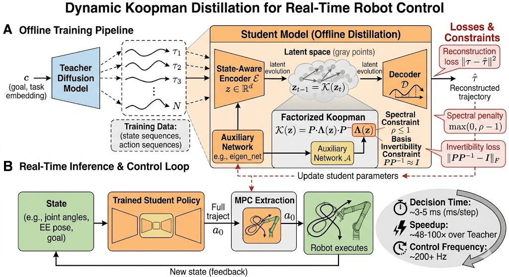

Real-Time Robot Control from Diffusion Models
Affiliation withheld for double-blind review
Diffusion policies produce high-quality, multi-modal action trajectories, but their iterative sampling makes them impractical for real-time control. We propose Factorized Koopman Distillation (FKD), which distills a multi-step diffusion teacher into a one-step student through a factorized Koopman latent transition and action prediction head.
On D4RL MuJoCo locomotion, FKD preserves teacher-level performance while reducing decision latency from ~100–300 ms to ~1 ms, and retains multi-modal candidate structure that prior one-step Koopman variants (KDM/KDM-F) fail to maintain.
We target real-time action selection for continuous-control robot tasks where a high-quality diffusion teacher is available but too slow for deployment. The student must satisfy two constraints simultaneously: (i) preserve return and multimodal behavior from the teacher and (ii) execute with one-step latency.
We evaluate on 5 seeds with normalized return, latency, within-run variability \(\sigma_{\mathrm{ep}}\), and worst-case return, using the same protocol as the paper tables.

We report results on Walker2d-medium-expert-v2 and HalfCheetah-medium-expert-v2.
| Env | Method | Return ↑ | Steps | Latency (ms) ↓ | σep ↓ | Worst-case Return ↑ |
|---|---|---|---|---|---|---|
| Walker2d | Diffusion Teacher | 1.0295 ± 0.0051 | 20 | 301.22 ± 2.41 | 0.0193 | 0.9759 |
| CD | 0.6144 ± 0.0176 | 1 | 1.09 ± 2.33 | 0.0577 | 0.4808 | |
| CT | 0.4404 ± 0.0096 | 1 | 1.09 ± 2.37 | 0.0659 | 0.2591 | |
| KDM | 0.6057 ± 0.0156 | 1 | 0.35 ± 0.04 | 0.0333 | 0.5925 | |
| KDM-F | 0.3386 ± 0.0070 | 1 | 0.87 ± 0.03 | 0.0380 | 0.3267 | |
| FKD (Ours) | 1.0973 ± 0.0002 | 1 | 1.75 ± 0.36 | 0.0004 | 1.0963 | |
| FKD (classifier) | 1.0285 ± 0.0022 | 1 | 4.57 ± 0.87 | 0.0242 | 0.9677 | |
| HalfCheetah | Diffusion Teacher | 0.8518 ± 0.0032 | 20 | 116.51 ± 2.39 | 0.0114 | 0.8229 |
| CD | 0.4027 ± 0.0109 | 1 | 1.08 ± 2.32 | 0.0277 | 0.3217 | |
| CT | 0.4089 ± 0.0047 | 1 | 1.08 ± 2.31 | 0.0198 | 0.3663 | |
| KDM | 0.6618 ± 0.0045 | 1 | 0.34 ± 0.03 | 0.0349 | 0.6571 | |
| KDM-F | 0.4852 ± 0.0098 | 1 | 0.86 ± 0.03 | 0.0216 | 0.4659 | |
| FKD (Ours) | 0.8885 ± 0.0042 | 1 | 0.82 ± 0.47 | 0.0134 | 0.8488 | |
| FKD (classifier) | 0.8599 ± 0.0010 | 1 | 1.83 ± 0.80 | 0.0081 | 0.8417 |
Direct teacher/ours/KDM/KDM-F comparisons are provided below using the uploaded rollout MP4 assets.
To reflect deployment-time latency, we provide synchronized replay where playback speed is adjusted by measured decision latency. In this mode, the teacher stream is slowed according to the teacher/student latency ratio, making the real-time responsiveness gap visually explicit.
We vary J in training and inference (5 seeds each). Note: J=1 uses the main checkpoint; J \in \{2,3,4\} are separately re-trained students.
| Task | J | Return ↑ | Latency (ms) ↓ | σep ↓ | Worst-case Return ↑ |
|---|---|---|---|---|---|
| Walker2d | 1 | 1.0973 ± 0.0002 | 1.75 ± 0.36 | 0.0004 | 1.0963 |
| 2 | 1.0951 ± 0.0001 | 3.03 ± 0.51 | 0.0003 | 1.0945 | |
| 3 | 1.0977 ± 0.0002 | 3.24 ± 0.49 | 0.0004 | 1.0965 | |
| 4 | 1.0995 ± 0.0001 | 3.63 ± 0.41 | 0.0002 | 1.0988 | |
| HalfCheetah | 1 | 0.8885 ± 0.0042 | 0.82 ± 0.47 | 0.0134 | 0.8488 |
| 2 | 0.8767 ± 0.0027 | 0.94 ± 0.35 | 0.0127 | 0.8514 | |
| 3 | 0.8178 ± 0.0012 | 1.10 ± 0.35 | 0.0180 | 0.7566 | |
| 4 | 0.8774 ± 0.0015 | 1.26 ± 0.35 | 0.0117 | 0.8486 |
Hardware (Kinova) assets are intentionally withheld in the current anonymous submission snapshot. Placeholder blocks are provided and can be replaced directly with your final figures and videos.
@article{anonymous2026fkd,
title = {Factorized Koopman Distillation: Real-Time Robot Control from Diffusion Models},
author = {Anonymous},
journal = {Under review, IEEE Robotics and Automation Letters},
year = {2026},
note = {Double-blind review; author information withheld}
}